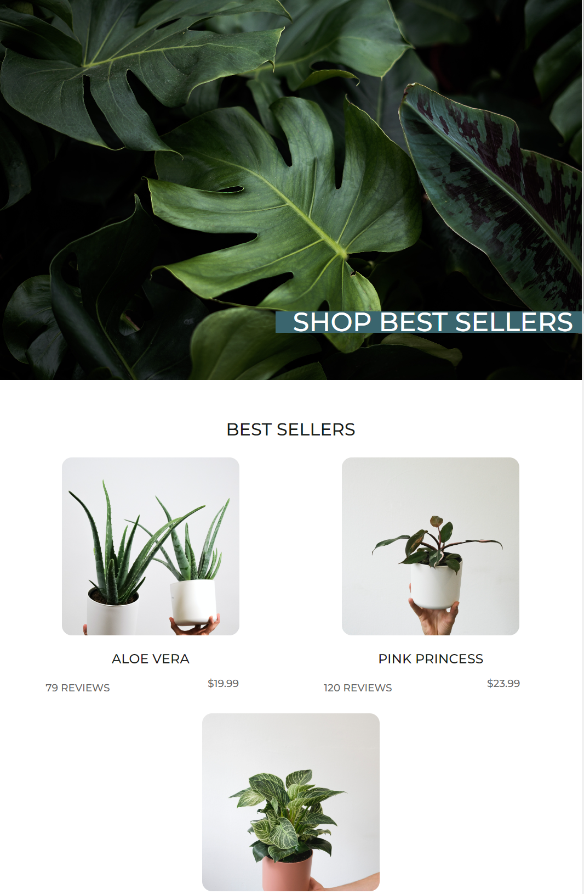
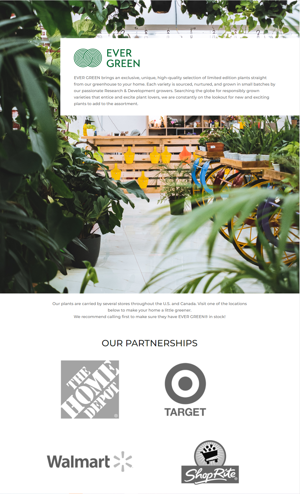

Web Interface Design
In this project, I had the opportunity to explore how to do a website of interface design. Through the combination of coding and UX/UI design, I was able to bring a new way for interface for our idea, which is Plant Furniture.
What I did
- Design Layout
- HTML5/CSS3
- Audit website
- Create Interaction
Problem
The website should cater to the needs of users who seek to incorporate greenery into their living spaces, but may lack knowledge about the different types of plants available and how to maintain them. Additionally, the website should also take into consideration the environmental impact of the products it offers and promote sustainable practices. The website should focus on the website's design, usability, and sustainability features to identify areas of improvement and enhance the user experience.

Solution
The website involves the development an effective classification system for the different types of plants and furniture products available on the website. This will allow users to easily browse and find the specific products they are interested in. In addition, providing detailed information on each product, such as ideal growing conditions and care instructions, will enable users to make informed decisions about which plants are best suited for their indoor environments. Incorporating a responsive design and ensuring the website is user-friendly will further enhance the overall user experience.
Challenging
Interface
Hardware Error
Responsive Error
Future development
One potential future development for the analysis process of the plant furniture website could be the implementation of sorting recommendations for users based on their options. Additionally, the website could incorporate user feedback and reviews to continuously improve the accuracy of these recommendations over time.


Reflection
During the project, I built the Evergreen website and learned a lot about website design principles and user experience. I also gained insight into the importance of visual hierarchy on incorporating branding and marketing strategies into website design. Through the process, I improved my website developer for both usability and accessibility. Overall, the project allowed me to deepen my understanding of website design and user experience, while also developing valuable skills for future projects.